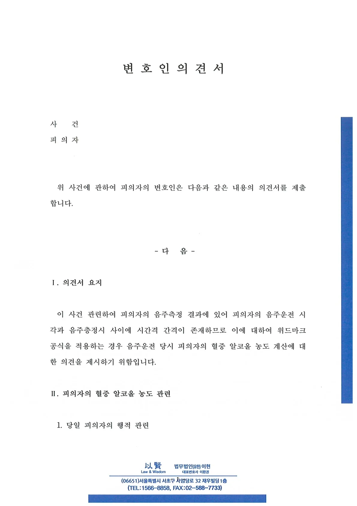
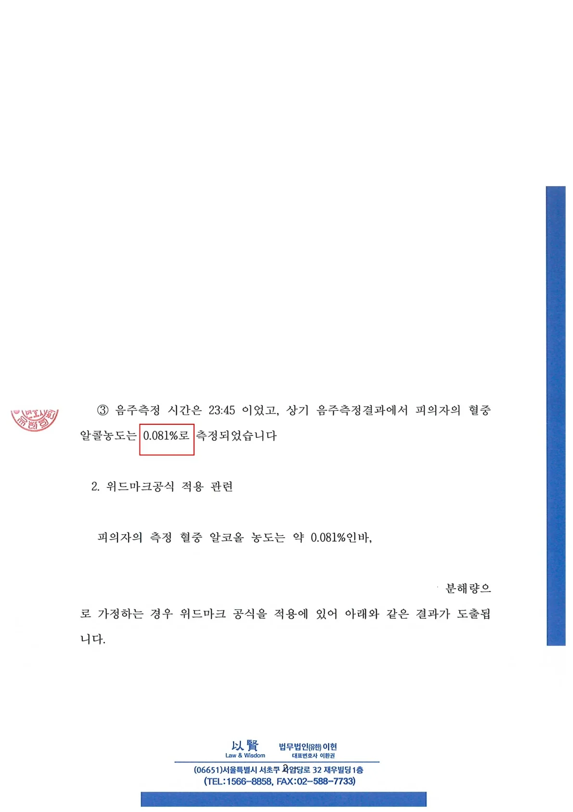
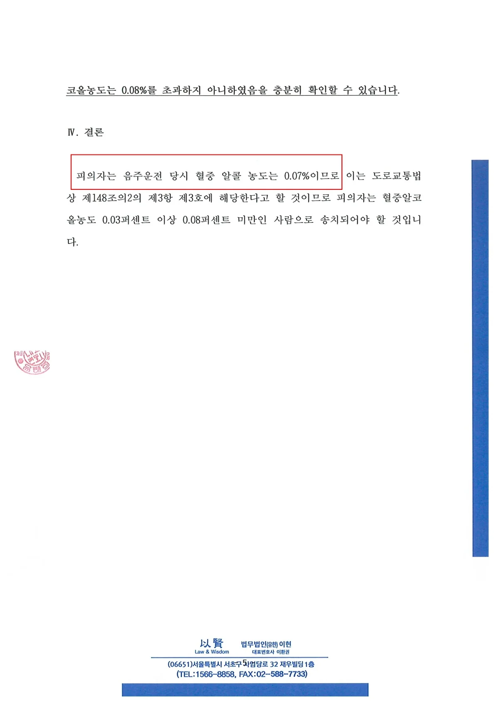
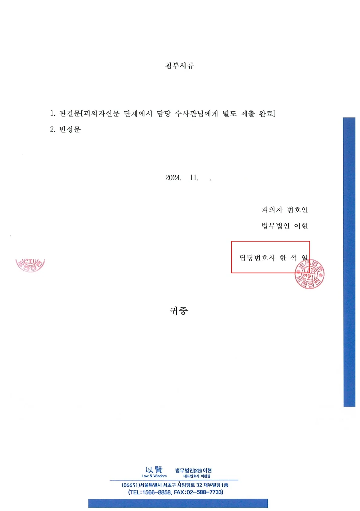

알코올 상승기를 입증하는 위드마크 공식 적용으로 0.081%의 수치를 0.071%로 하향시켰습니다. 억울한 면허취소를 면허정지로 방어하고 무거운 형사처벌 수위를 낮춘 구제 사례입니다.
1. 사건의 위기: 0.081% 측정, 피할 수 없는 '면허취소'
당시 의뢰인의 음주 측정 결과는 혈중알코올농도 0.081%였습니다. 현행 도로교통법상 혈중알코올농도 0.08% 이상이면 초범이라 할지라도 예외 없이 '면허취소' 처분이 내려집니다. 또한, 형사 처벌 역시 0.08%를 기준으로 형량이 크게 뛰어 500만 원에서 1,000만 원 사이의 무거운 벌금형에 처해집니다
의뢰인에게는 운전면허가 곧 생계와 직결되어 있었습니다. 이대로 0.081%의 수치가 확정된다면 직장을 잃을 수도 있는 절망적인 상황이었습니다.
2. 변호사의 전략: '위드마크 공식'을 통한 수치 하향
이러한 상황에서는 단순한 반성문이나 생계의 어려움을 호소하는 읍소만으로는 수치를 뒤집을 수 없습니다. 저는 사건 당일 의뢰인의 행적을 분 단위로 쪼개어 분석했습니다.
조사 결과, 의뢰인이 운전대를 잡은 시점과 경찰관에게 음주 측정을 당한 시점 사이에 약 20여 분의 시간적 간격이 존재한다는 사실을 포착했습니다. 저는 즉시 변호인 의견서를 제출하여, 의뢰인이 음주 측정을 한 시점은 알코올 수치가 계속 올라가는 '상승기'였음을 과학적으로 입증했습니다.
나아가 '위드마크 공식(Widmark Formula)'을 엄격하게 적용하여, 운전할 당시의 실제 혈중알코올농도는 측정 수치인 0.081%보다 낮은 0.07% 수준이었다는 점을 강력하게 주장했습니다.
3. 0.071% 인정, 면허정지 구제 및 벌금 400만 원
경찰 수사 단계부터 수치의 오류를 적극적으로 다툰 결과는 놀라웠습니다. 수사기관은 변호인의 주장을 받아들여, 당초 면허취소 대상이었던 의뢰인에게 '음주운전 정지 처분'으로 하향하여 송치 결정을 내렸습니다.
법원 역시 위드마크 공식 적용을 참작하여 최종 혈중알코올농도를 0.081%가 아닌 0.071%로 인정하였습니다. 그 결과, 의뢰인은 최소 500만 원 이상 예상되던 무거운 벌금 대신, 0.08% 미만 구간의 처벌 기준을 적용받아 '벌금 400만 원'의 가벼운 약식명령으로 사건을 무사히 마무리할 수 있었습니다.
포기하기엔 이릅니다. 수치 0.001%를 다투는 치밀함이 결과를 바꿉니다.
음주운전 초범이라도 0.08%가 넘어가면 얄짤없이 면허가 취소되는 엄벌주의 시대입니다. 하지만 측정된 수치가 0.08% 언저리(0.081%~0.085% 등)라면, 단 한 번의 측정 결과에 좌절하지 마십시오. 음주 종료 시점, 운전 시점, 측정 시점의 차이를 분석하여 위드마크 공식을 제대로 적용할 수 있는 전문가를 만난다면 면허를 살릴 길이 열릴 수 있습니다.
단순한 선처 호소를 넘어, 과학적이고 객관적인 증거로 재판부를 설득하겠습니다. 면허취소의 위기, 법률사무소 준일 한석일 변호사가 해결책을 찾아드리겠습니다.




※ 구체적인 사건은 사실관계에 따라 달라질 수 있습니다.

 한석일 대표변호사
한석일 대표변호사